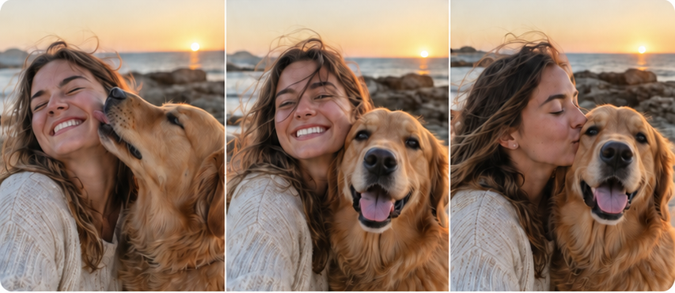

01
Scan quietly
Keeply reviews the photos you choose using on-device signals. No upload queue. No account to create.
Find the pockets of noise keeply
keeply
A calmer camera roll
Keep the strongest moments. Clear the rest. Keeply brings a little order to your photo library without turning your memories into a spreadsheet.
Your library

Less sorting. More living.
A better way through the backlog
Keeply looks for the moments that need a second look — similar photos, screenshots, and the little pile of things you meant to deal with later.
It gives you a focused queue, a clear recommendation, and the final say.
Keeply reviews the photos you choose using on-device signals. No upload queue. No account to create.
Find the pockets of noiseSimilar shots arrive together, with the strongest frame surfaced first so decisions feel simple.
One small decision at a timeNothing changes until you confirm it. Clear what you no longer need and keep the moments you do.
Your library, your callThe useful kind of smart
Keeply makes the easy call visible. It compares similar images using quality signals like sharpness, composition, and resolution — then leaves the meaningful choice to you.
Make room for the good stuffA short, focused review feels better than an endless scroll through every photo you own.
When there is nothing waiting for you, Keeply gets out of the way. All clear means all clear.
Privacy is the default
Keeply is built to do its photo analysis locally. The library you choose remains yours, and every deletion is something you explicitly confirm.
Read the privacy policyKeeply does not send your photo library to a Keeply photo-processing server.
Start with the iPhone you have. Your local review data stays local to that device.
Keeply recommends. You decide. Apple Photos performs the final system action.
When you want the whole ritual
Good questions
Keeply is designed to analyze the photos you authorize on your iPhone. The current app does not send your photo pixels or library to a Keeply-operated photo-processing server. Apple Photos, iCloud, Apple billing, and RevenueCat remain separate services with their own policies.
No. Keeply can recommend items, but nothing is deleted until you confirm the action. Apple Photos then handles the system confirmation and deletion flow.
Keeply offers App Store purchases such as a lifetime option and an auto-renewing weekly plan. Apple processes payment and manages cancellation, refunds, and subscription settings. You can restore eligible purchases from inside the App.
You can stop using Keeply at any time. Deleting the app does not cancel an App Store subscription; manage that through your Apple Account subscription settings.
Make space for what matters
Keeply is a small, deliberate tool for a very human problem: deciding what is worth keeping.